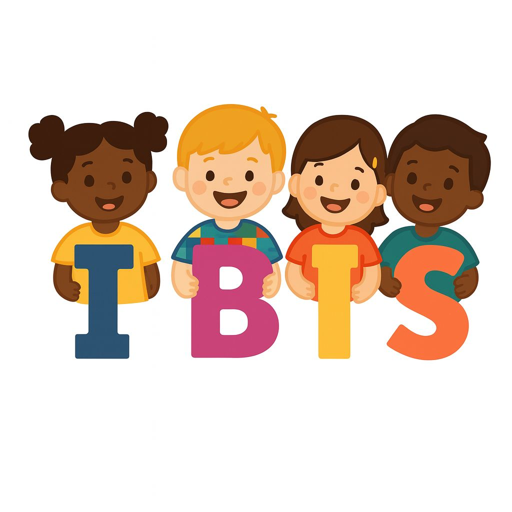

Instituto IBIS
Transformando vidas através da educação e inclusão ✨
🕐 Horário de Funcionamento
Segunda a Sexta
das 08h às 17h

Transformando vidas através da educação e inclusão ✨
Segunda a Sexta
das 08h às 17h